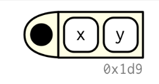
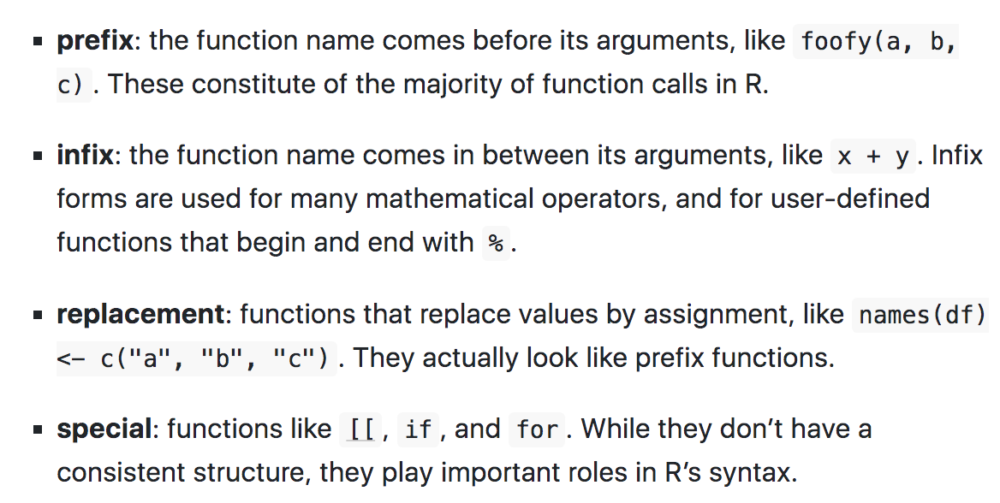

Let’s imagine the structure of a function:
The black dot on the left is the environment. The two blocks to the right are the function arguments.
Function components
Functions have three parts, formals(), body(), and environment().
Example
#> # A tibble: 3 × 5
#> total_cup_points species owner country_of_origin farm_name
#> <dbl> <chr> <chr> <chr> <chr>
#> 1 90.6 Arabica metad plc Ethiopia "metad pl…
#> 2 89.9 Arabica metad plc Ethiopia "metad pl…
#> 3 89.8 Arabica grounds for health admin Guatemala "san marc…#> {
#> avg <- coffee_ratings %>% filter(species == species) %>%
#> summarise(mean = mean(total_cup_points))
#> return(avg)
#> }Functions uses attributes, one attribute used by base R is srcref, short for source reference. It points to the source code used to create the function. It contains code comments and other formatting.
Are the core function in base R, such as sum()
Type of primitives:
These core functions have components to NULL.
If you don’t provide a name to a function
#> $mpg
#> [1] 25
#>
#> $cyl
#> [1] 3Invoking a function
Rules
Debugging
This function
You can change the function’s environment to an environment which contains nothing:
Example
i01 <- function(y, z) {
list(y = y, z = z)
}
i02 <- function(x, ...) {
i01(...)
}
str(i02(x = 1, y = 2, z = 3))#> List of 2
#> $ y: num 2
#> $ z: num 3Implicit or explicit returns
Invisibility (<- most famous function that returns an invisible value)
stop() to stop a function with an error.
Exit handlers
Everything that exists is an object. Everything that happens is a function call. — John Chambers
This is an interesting example taken from a course on Coursera: Infectious disease modelling-ICL
The purpose of this example is to show how to make a model passing through making a function.
First we need to load some useful libraries:
Then set the model inputs:
And add the model parameters:
Then we set the time as an important factor, which defines the length of time we are looking at this model run. It is intended as the time range in which the infections spread out, let’s say that we are aiming to investigate an infection period of 100 days.
Finally, we set up the SIR model, the susceptable, infected and recovered model. How do we do that is passing the paramenters through a function of the time, and state.
Within the model function we calculate one more paramenter, the force of infection: \(\lambda\)
Once we have our SIR model function ready, we can calculate the output of the model, with the help of the function ode() from {deSolve} package.
output<- as.data.frame(ode(y = state_values,
times = times,
func = sir_model,
parms = parameters))
output %>% head#> time S I R
#> 1 0 99999.00 1.000000 0.0000000
#> 2 1 99998.43 1.284018 0.2840252
#> 3 2 99997.70 1.648696 0.6487171
#> 4 3 99996.77 2.116939 1.1169863
#> 5 4 99995.56 2.718152 1.7182450
#> 6 5 99994.02 3.490086 2.4902600In addition to our builtin SIR model function we can have a look at:
It solves Ordinary Differential Equations.
#> function (y, times, func, parms, method = c("lsoda", "lsode",
#> "lsodes", "lsodar", "vode", "daspk", "euler", "rk4", "ode23",
#> "ode45", "radau", "bdf", "bdf_d", "adams", "impAdams", "impAdams_d",
#> "iteration"), ...)
#> {
#> if (is.null(method))
#> method <- "lsoda"
#> if (is.list(method)) {
#> if (!inherits(method, "rkMethod"))
#> stop("'method' should be given as string or as a list of class 'rkMethod'")
#> out <- rk(y, times, func, parms, method = method, ...)
#> }
#> else if (is.function(method))
#> out <- method(y, times, func, parms, ...)
#> else if (is.complex(y))
#> out <- switch(match.arg(method), vode = zvode(y, times,
#> func, parms, ...), bdf = zvode(y, times, func, parms,
#> mf = 22, ...), bdf_d = zvode(y, times, func, parms,
#> mf = 23, ...), adams = zvode(y, times, func, parms,
#> mf = 10, ...), impAdams = zvode(y, times, func, parms,
#> mf = 12, ...), impAdams_d = zvode(y, times, func,
#> parms, mf = 13, ...))
#> else out <- switch(match.arg(method), lsoda = lsoda(y, times,
#> func, parms, ...), vode = vode(y, times, func, parms,
#> ...), lsode = lsode(y, times, func, parms, ...), lsodes = lsodes(y,
#> times, func, parms, ...), lsodar = lsodar(y, times, func,
#> parms, ...), daspk = daspk(y, times, func, parms, ...),
#> euler = rk(y, times, func, parms, method = "euler", ...),
#> rk4 = rk(y, times, func, parms, method = "rk4", ...),
#> ode23 = rk(y, times, func, parms, method = "ode23", ...),
#> ode45 = rk(y, times, func, parms, method = "ode45", ...),
#> radau = radau(y, times, func, parms, ...), bdf = lsode(y,
#> times, func, parms, mf = 22, ...), bdf_d = lsode(y,
#> times, func, parms, mf = 23, ...), adams = lsode(y,
#> times, func, parms, mf = 10, ...), impAdams = lsode(y,
#> times, func, parms, mf = 12, ...), impAdams_d = lsode(y,
#> times, func, parms, mf = 13, ...), iteration = iteration(y,
#> times, func, parms, ...))
#> return(out)
#> }
#> <bytecode: 0x0000022b02095d58>
#> <environment: namespace:deSolve>With the help of the {reshape2} package we use the function melt() to reshape the output:
#> time variable value
#> 1 0 S 99999.00
#> 2 1 S 99998.43
#> 3 2 S 99997.70
#> 4 3 S 99996.77
#> 5 4 S 99995.56
#> 6 5 S 99994.02The same as usign pivot_longer() function.
Before to proceed with the visualization of the SIR model output we do a bit of investigations.
What if we want to see how melt() function works?
What instruments we can use to see inside the function and understand how it works?
Using just the function name melt or structure() function with melt as an argument, we obtain the same output. To select just the argument of the function we can do args(melt)
#> function (data, ..., na.rm = FALSE, value.name = "value")
#> {
#> UseMethod("melt", data)
#> }
#> <bytecode: 0x0000022b08d810e8>
#> <environment: namespace:reshape2>“R functions simulate a closure by keeping an explicit reference to the environment that was active when the function was defined.”
ref: closures
Try with methods(), or print(methods(melt)): Non-visible functions are asterisked!
The S3 method name is followed by an asterisk * if the method definition is not exported from the package namespace in which the method is defined.
#> [1] melt.array* melt.data.frame* melt.default* melt.list*
#> [5] melt.matrix* melt.table*
#> see '?methods' for accessing help and source code#> [1] [ aperm as.data.frame as_tibble Axis
#> [6] coerce initialize lines melt plot
#> [11] points print show slotsFromS3 summary
#> [16] tail
#> see '?methods' for accessing help and source codeWe can access to some of the above calls with getAnywhere(), for example here is done for “melt.data.frame”:
#> A single object matching 'melt.data.frame' was found
#> It was found in the following places
#> registered S3 method for melt from namespace reshape2
#> namespace:reshape2
#> with value
#>
#> function (data, id.vars, measure.vars, variable.name = "variable",
#> ..., na.rm = FALSE, value.name = "value", factorsAsStrings = TRUE)
#> {
#> vars <- melt_check(data, id.vars, measure.vars, variable.name,
#> value.name)
#> id.ind <- match(vars$id, names(data))
#> measure.ind <- match(vars$measure, names(data))
#> if (!length(measure.ind)) {
#> return(data[id.vars])
#> }
#> args <- normalize_melt_arguments(data, measure.ind, factorsAsStrings)
#> measure.attributes <- args$measure.attributes
#> factorsAsStrings <- args$factorsAsStrings
#> valueAsFactor <- "factor" %in% measure.attributes$class
#> df <- melt_dataframe(data, as.integer(id.ind - 1), as.integer(measure.ind -
#> 1), as.character(variable.name), as.character(value.name),
#> as.pairlist(measure.attributes), as.logical(factorsAsStrings),
#> as.logical(valueAsFactor))
#> if (na.rm) {
#> return(df[!is.na(df[[value.name]]), ])
#> }
#> else {
#> return(df)
#> }
#> }
#> <bytecode: 0x0000022afff9dd58>
#> <environment: namespace:reshape2>References:
Going back to out model output visualization.